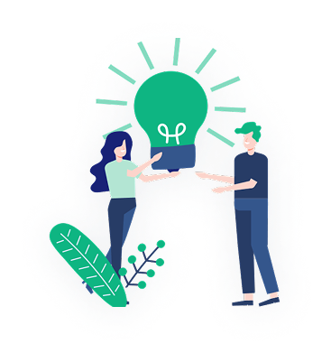

NEET UG 2024 All India
Counselling College Predictor
- After NEET results are available
- Highly specific MBBS college predictor
- Includes college details such as cut off and fee structure
- Includes data from MCC and 32 state counselling

NEET UG 2024 All India
Counselling College Predictor
- Pre and Post NEET MBBS admission possibility estimation
- Includes NEET rank predictor
- Includes option to try possibility of multiple marks
- Not as specific and comprehensive as Rank based predictor